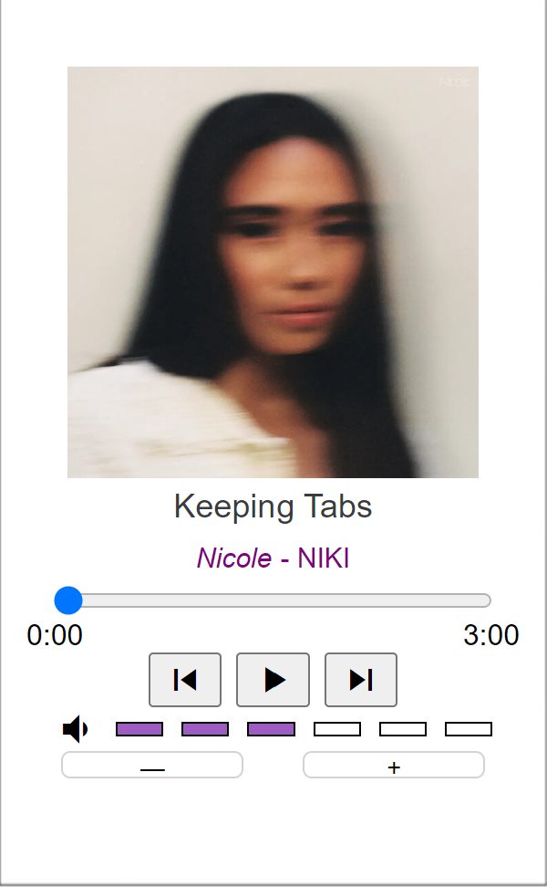

Hi, I'm Tim!
-
Sortify

Sortify uses k-means clustering to sort your
large and unruly playlists into smaller, smarter mixes.
It also visualizes the songs on an interactive chart! -
Music Player
A simulated music player that visualizes
different music albums and can show you songs,
and even simulate playing them.